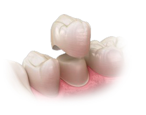
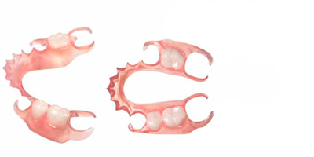
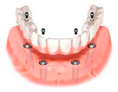
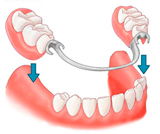
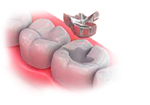
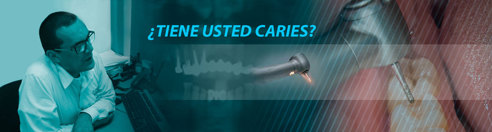
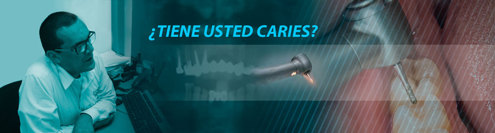

Corona de Porcelana
Material estético del color del diente que se coloca una vez que se haya eliminado la caries para reconstruir y regresarle su forma y función. Esta es indicada cuando la pieza presenta un grado de destrucción menor.

Puente Removible Estético
(Prótesis Removible)
Cuando se han perdido muchas piezas dentales y el puente fijo no es una opción, se recomienda un puente removible, el cual el paciente puede quitar para su limpieza y colocarlo de nuevo una vez hecha esta.

Puentes Fijos
(Prótesis Fija)
Son restauraciones que se colocan cuando se han perdido una o más piezas dentales. Este tipo de prótesis se sostiene de dos piezas que se encuentran entre el espacio del diente ausente, se le llama puente fijo porque va pegado a los dientes pilares.

Coronas y Puentes de Zirconia
Material altamente estético libre de metal para personas que exigen tratamientos altamente estéticos y durables.

Obturaciones
Material estético del color del diente que se coloca una vez que se haya eliminado la caries para reconstruir y regresarle su forma y función. Esta es indicada cuando la pieza presenta un grado de destrucción menor.

Otros servicios
.Corona de porcelana libre de metal
.Incrustaciones de porcelana
.Incrustaciones de ceromero 100% estetico
.Blanquemiento dental con laser
.Limpieza dental con Ultrasonido
.Endodoncias (Root canal)
.Priodoncias (Tratamiento de encias)
.Cirugia Maxilofacial
Protesis dental
.Puentes fijos de porcelana de zirconia 100% esteticas
.Protesis removible flexible
.Protesis totales (Dentadura completa)


 
